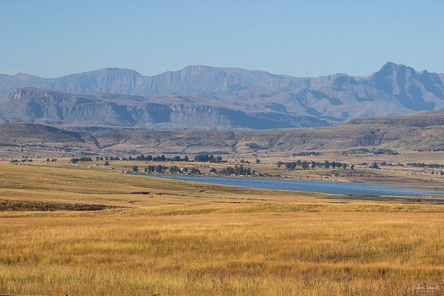

El reino de los elefantes.
Es especialmente prominente por su número de elefantes, con más de 50.000 ejemplares.

Sudáfrica.
Turismo al natural.

Parque nacional Kruger.
El destino por excelencia para un safari.
SUDÁFRICA
Si hay un país en el mundo que se caracteriza por su fascinante diversidad cultural y geográfica, ese es Sudáfrica. Conocida como la Nación del Arcoíris, Sudáfrica tiene una pureza única. Su naturaleza y vida salvaje hacen que sea un destino que atrae por muchas razones a cualquier apasionado de los viajes.
Donde se encuentra en el mapa – Como su nombre bien indica, se encuentra totalmente al sur de África. Desde su frontera norte, limita de oeste a este con los siguientes países: Namibia, Botsuana, Zimbabue y Mozambique. Los océanos que rodean al país son el Océano Atlántico y el Océano Índico. El punto más al sur de África se llama Cape Agulhas (Cabo de las Agujas), donde además coinciden ambos océanos.
Capital y ciudades principales – Es muy interesante, ya que Sudáfrica tiene 3 capitales. Pretoria es la capital administrativa de Sudáfrica, Ciudad del Cabo es la capital legislativa y Bloemfontein es la capital judicial. En cuanto a sus ciudades principales, ellas son: Johannesburgo (5 905 552 habitantes), Ciudad del Cabo (4 713 576 habitantes), Pretoria (3 862 352 habitantes), Durban (3 793 580 habitantes), Puerto Elizabeth (967 677 habitantes), Bloemfontein (463 064 habitantes), Nelspruit (110 159 habitantes) y Kimberley (225 160 habitantes).
Destinos de turismo principales – Sudáfrica es un país que destaca por su amplia diversidad de ecosistemas. El destino principal por excelencia de safari en Sudáfrica es el Parque Kruger, donde se pueden disfrutar de las mejores experiencias de safari de todo África. Otro destino importantísimo de Sudáfrica es Ciudad del Cabo (Cape Town), la cual es una de las ciudades más interesantes y atractivas del mundo. Ciudad del Cabo destaca por su mágico multiculturalismo, la Montaña de la Mesa (Table Mountain, una de las siete maravillas del mucho), el Cabo de Buena Esperanza y los Viñedos del Cabo. Una de las joyas ocultas de Sudáfrica es Grootbos, una reserva natural privada que National Geographic considera como una de las 25 mejores del mundo. En Grootbos, uno puede alojarse en uno de los reinos florales más espectaculares de todo África y tener la oportunidad de ver un auténtico safari marino, con ballenas, pingüinos y hasta incluso tiburones blancos.
Qué idiomas se hablan en Sudáfrica – Sudáfrica, la nación del arcoíris, se caracteriza por tener 11 idiomas oficiales. Esos idiomas son: Zulú, Xhosa, Afrikaans, Pedi, Inglés, Tswana, Sotho, Tsonga, Swati, Venda y Ndebele. Hay que tener en cuenta que toda la gente en Sudáfrica habla inglés y es el idioma universal del país. Algo curioso es que el himno de Sudáfrica está formado por los idiomas más hablados, los cuales son Inglés, Afrikáans Xhosa, Zulú y Sesotho.
Su población - Sudáfrica, con una población de 57 664 993 personas, es el sexto país más poblado de Africa por detrás de Nigeria, Etiopia, Egipto, el Congo y Tanzania.
El clima de Sudáfrica – Su clima es moderado. No tiene temperaturas muy frías ni muy cálidas. Sus estaciones, funcionan a la inversa que en el hemisferio norte. Uno de los aspectos más atractivos de Sudáfrica es que es un destino al cual se puede viajar cualquier mes del año y siempre ofrece opciones y alternativas muy buenas para disfrutar de un gran viaje.
Qué tamaño tiene la superficie de Sudáfrica – Tiene una superficie de 1.219.090 Km2, por lo que puede considerarse un país grande. A modo de referencia, tiene la misma superficie que Francia y España juntas.
Cómo es su gente – Sudáfrica es una nación muy multicultural. La distribución de razas en porcentajes aproximada es de 78% de raza negra, 10% son de raza blanca (descendientes de los holandeses y británicos), 9% de raza mestiza y un 3% asiáticos e indios. La gente sudafricana se define por ser una gente muy amable, atenta con los demás y muy sociable. Es una nación de gente que sonríe y que siempre reciben con los brazos abiertos a cualquier persona de fuera o turista. Es ese cariño con el que reciben a la gente, que hace que sea un destino de viaje top, el cual destaca por su sólida industria del turismo.
Qué moneda hay en Sudáfrica – La moneda oficial de Sudáfrica es el Rand. Su código se escribe como ZAR. Es la moneda oficial de Sudáfrica desde el año 1961 y tiene un cambio de moneda que hace que sea muy favorable visitar el país desde España (euros) o desde Sudamérica (dólares americanos). El valor aproximado actual del Rand en comparación al Euro es de 19 rands 1 Euro y al Dólar americano es de 16 rands 1 US Dólar.
Gastronomía en Sudáfrica – Su gastronomía se caracteriza por ser una fusión de culturas que hacen que la mezcla sea completamente especial. La comida principal y por excelencia de Sudáfrica es la Braai, lo cual podría definirse como una barbacoa o un asado. Es una costumbre asociada a reuniones sociales entre familiares y amigos. Es una forma característica de los sudafricanos de crear comunidad y de reunirse. La carne es la parte estrella, pero, además, se suele acompañar con una ensalada de patata y unos sándwiches tostados en el fuego con cebolla, queso y rodajas de tomate. Son unos grandes amantes del fuego y de disfrutar del romanticismo que conlleva cocinar para familiares y amigos en unas buenas brasas.
Nelson Mandela – El papel que jugó Nelson Mandela en Sudáfrica fue fundamental. Fue presidente del país desde 1994 hasta 1999 y transformó a Sudáfrica completamente. Hizo que Sudáfrica se convirtiera en un país multicultural, lleno de color. Fue el padre de la Nación del Arcoíris. Por todos sus logros y dedicación a la unión pacífica del país y aceptación de todas las razas, se convirtió en un ejemplo para todo el mundo. Recibió el Premio Novel de la Paz en 1993.
Cómo es la bandera de Sudáfrica – La bandera de Sudáfrica, establecida en el año 1994, año de las primeras elecciones completamente democráticas de Sudáfrica y fin del apartheid, tiene 6 colores. Todos esos colores son muy simbólicos y tienen un significado muy especial. El azul representa el cielo. El rojo la sangre. El amarillo los recursos naturales del país como el oro. El verde representa la tierra. Y el blanco y el negro representan los colores de las principales razas del país. El diseño de Y que tiene simboliza la unión en una sola nación.
Top lugares para visitar en Sudáfrica
Addo Elephant National Park
Con humildes comienzos como un pequeño santuario de elefantes establecido para proteger a sólo 11 elefantes Addo de color rojizo en la década de 1930, el Parque Nacional Addo Elephant es ahora uno de los mayores parques nacionales de Sudáfrica y posiblemente uno de los mejores para la detección de estos gentiles gigantes.
Drakensberg
El Drakensberg es una cadena montañosa en la provincia de KwaZulu-Natal de Sudáfrica. Tienta a los visitantes por su clima cálido ideal para el senderismo. Disfruta de una caminata de uno o de dos días al anfiteatro y explora el Parque Nacional Royal Natal, el hogar de Tugela Falls, la segunda cascada más alta del mundo.
Parque Nacional Kruger
Es quizá uno de los Parques Nacionales de mayor extensión en el mundo, y sin dudas uno de los más famosos. El Parque Kruger es un impresionante refugio de vida salvaje que alberga a una increible diversidad de grandes animales. Se encuentra localizado al noreste de Sudáfrica, en la franja que limita con Mozambique y se extiende de norte a sur desde la frontera con Zimbabue hasta casi los límites con Suazilandia. El Parque Nacional Kruger representa uno de los últimos refugios de poblaciones importantes de Rinocerontes Blancos y Negros, los cuales se encuentran en la actualidad al borde de la extinción. Es importante comentar que Sudáfrica es hoy el hogar del 80% de la población mundial de rinocerontes, estimada en sólo unos 5000 rinocerontes negros y unos 20000 rinocerontes blancos. Para aquellos que se aventuren por primera vez al Africa, es altamente recomendable alojarse en estos lodges y realizar los avistajes de fauna de la mano de expertos conocedores del lugar quienes son conocedores del comportamiento animal.
Parque Nacional Montaña de la mesa

El Parque Nacional de la Montaña de la Mesa es uno de los rincones naturales más visitados en Ciudad del Cabo. Con un teleférico con el que subir a la montaña, es el macizo montañoso más escalado del mundo. La belleza de sus vistas desde arriba o desde abajo, la han convertido en una de las maravillas naturales del mundo moderno. Hogar de leones, rinocerontes y elefantes en la Antigüedad, en la actualidad son las plantas sus principales atractivos. Hay varias especies vegetales únicas en el mundo que solo crecen en este montaña. Los caminos para hacer senderismo y escalar la montaña están cuidados y bien señalados. Por ello, permite disfrutar de una experiencia en la naturaleza a un paso de Ciudad del Cabo. En el Parque Nacional de la Montaña de la Mesa no solo se incluye la propia montaña sino también el Cabo de Buena Esperanza, el lugar más meridional del continente africano.
Robben Island
A escasos metros de Ciudad del Cabo pero en mitad del océano se encuentra Robben Island. Esta isla es un ejemplo viviente de la convulsa historia por la que pasó Sudáfrica antes de alcanzar la estabilidad que disfruta en la actualidad. Con una larga historia por la que pasaron portugueses, ingleses y holandeses, Robben Island se convirtió en una cárcel donde estuvo largos años encarcelado Nelson Mandela, Premio Nobel de la Paz y el político que logró tumbar el apartheid. En la actualidad Robben Island permite conocer más a fondo la historia de esa época. Unido a los Museos del Apartheid en Johannesburgo y el Museo Nelson Mandela en Mthatha, son los mejores reflejos de una época que ya quedó muy atrás. La importancia histórica de la isla la ha convertido en Patrimonio de la Humanidad por la UNESCO desde el año 1999. Además, la isla está habitada por una colonia de leones marinos. Si tenemos suerte, también podremos ver ballenas, delfines e incluso tiburones.
Gansbaai
Esta pequeña localidad a una hora de Ciudad del Cabo es una ciudad vacacional. La preferida por los locales para sus vacaciones, destaca por una actividad aparentemente muy arriesgada. En Gansbaai hay varias empresas que se dedican a llevar turistas a nadar con tiburones blancos. Estarás dentro de una jaula, lo que hace la experiencia completamente segura. Te vestirás con un traje de neopreno y atraerán con comida a estos temibles animales. Los tiburones blancos se acercarán y podrás verlos desde muy cerca en una experiencia que quita el aliento.
Cañón del Río Blyde
Conocido por ser el único cañón verde del mundo, ofrece un paisaje realmente espectacular. Se trata, además, del tercer mayor cañón del mundo, solo por detrás del Gran Cañón del Colorado y el Cañón del Río Fish de la vecina Namibia. Se encuentra situado a medio camino entre Johannesburgo (la ciudad más poblada de Sudáfrica) y el Kruger.
Jardín Botánico de Kirstenbosch
¿Puede un jardín botánico ser uno de los mejores lugares de Sudáfrica? Puede, porque, de hecho, estamos ante el único jardín botánico del mundo Patrimonio de la Humanidad por la UNESCO. El Jardín Botánico de Kirstenbosch cambió su nombre en 2004 por Instituto Nacional de la Biodiversidad Sudafricana, preservando desde su nacimiento en 1913 las plantas propias de todo el país. En total, se trata de un jardín de 528 hectáreas situado en la Montaña de la Mesa con más de 2500 especies diferentes que conocer. Además, también se han registrado más de 125 especies animales, incluyendo tortugas marinas, lagartos o bellas mariposas. Un lugar único tanto por su ubicación como por su belleza, preparado sorprender a cualquier visitante.

Montaña de la mesa
Una de las siete maravillas naturales del mundo.

Gansbaai
¡Aventura al límite con tiburones blancos!

Drakensberg
El parque está en la lista del Patrimonio Mundial de la UNESCO por su excepcional belleza natural.

¡Lo que hay que saber antes de llegar a Kruger!
Información útil antes de aventurarse en el Parque Nacional Kruger.

Aeropuerto Kruger
Es posible llegar volando al Parque Nacional Kruger.

Alojamiento en Kruger
En el Parque Nacional Kruger y en las reservas anexadas, existen diversos lodges equipados con todas las comodidades de la habitación de un hotel.

Ruta Jardín.
La Ruta Jardín es reconocida como uno de los paraísos vacacionales del país. Sus playas y la frondosa vegetación se unen para formar paisajes con fama internacional, en combinación de una topografía única.
Addo Elephant National Park
Experiencia única en este increíble y desafiante Parque Nacional.

Robben Island
Símbolo de libertad en Sudáfrica.